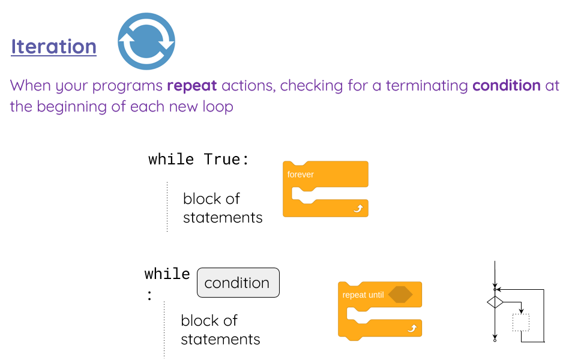
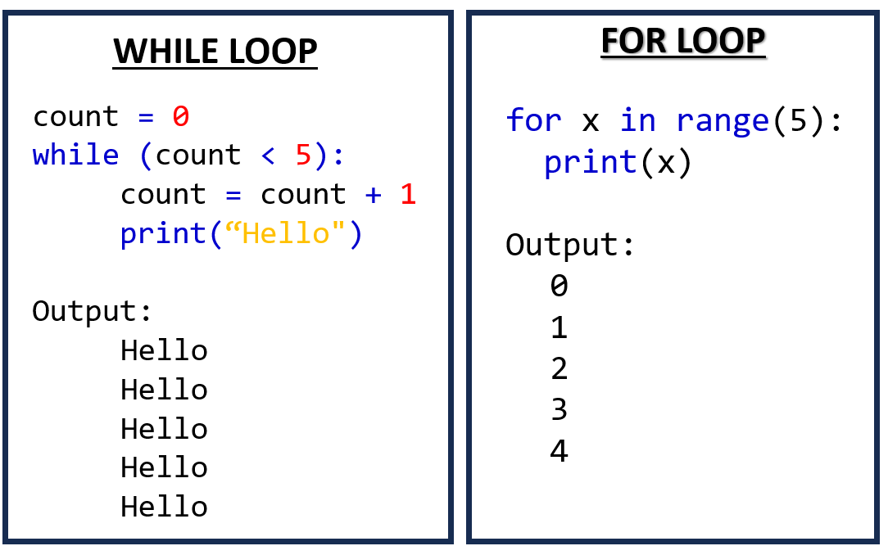

Page 10 of 15
Iteration (while and for loops)


VIDEOTUTORIAL: https://classroom.thenational.academy/lessons/round-and-round-6cr6ae
Activities
17Activity 17
Toss the coin: Design a program which flips a coin randomly.
1. Ask the user how many times to flip the coin.
2. Flip the coin and show the results on the screen.
3. Print on the screen the percentage of Heads and Tails you got at the end.
18Activity 18
Print first 10 next numbers after the entered number by the user (use while loop)
19Activity 19
The computer gets a random number between 1 and 10. The user has to guess it. Use a WHILE loop to repeat until the user guesses the number.
20Activity 20
DESIGN AN APP MENU: Create a program with 3 options menu. The program keeps running until the user presses option 3.
Option 1: Add two numbers
Option 2: Substract two numbers
Option 3: Exit
FOR LOOP
FOR LOOP: https://www.w3schools.com/python/python_for_loops.asp
21Activity 21
Write a Python program to create the multiplication table (from 1 to 10) of a number. (Use a FOR LOOP)
Expected Output:
Input a number: 6
6 x 1 = 6
6 x 2 = 12
6 x 3 = 18
6 x 4 = 24
6 x 5 = 30
6 x 6 = 36
6 x 7 = 42
6 x 8 = 48
6 x 9 = 54
6 x 10 = 60
22Activity 22
Repeat the previous activity by using a While loop.
23Activity 23
- DIVISORS *: Create a program that asks the user for a number and then prints out a list of all the divisors of that number. (If you don’t know what a divisor is, it is a number that divides evenly into another number. For example, 13 is a divisor of 26 because 26 / 13 has no remainder.)
HINT: use the for or while loop
24Activity 24
- PASSWORD GENERATOR *: Create a program that generates a random password. The computer will ask the user the leght of the password, if he wants to include: small letters, capital letters, numbers, or symbols...and based on that it will generate the new password.